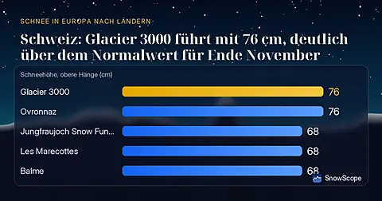

Schneebericht Schweiz: Schneehöhen, Neuschnee und die Woche
In der Schweiz sind heute rund 22.370 km² Bergland weiß, 72 % der kartierten Berge und Hügel des Landes. Das sind 1.220 km² weniger als gestern. Das schneereichste Skigebiet ist Les Marecottes mit 120 cm auf den oberen Hängen. Bis zu 25 cm Neuschnee könnten in der kommenden Woche auf die schneereichsten Hänge fallen.
Die Live-Schneeprognose für Les Marecottes in der SnowScope-AppSchneehöhen, Pulverschnee-Alarme und 3D-Karte, gratis.Heute auf einen Blick
| Weiße Fläche | 22.370 km² |
|---|---|
| Anteil am Bergland | 72 % |
| Max. Neuschnee in 24 h | 2 cm |
| Max. Neuschnee in 3 Tagen | 66 cm |
| Nächste 3 Tage (schneereichste Hänge) | 25 cm |
| Nächste 7 Tage | 25 cm |
| Meist weiß ab | 1.000 m |
| Skigebiete mit Schnee oben | 268 von 279 |
Die letzten sieben Tage
Am 18. November waren rund 16.060 km² weiß, heute sind es 22.370 km².
Die Schneedecke wuchs in diesen Tagen um 6.310 km².
Der stärkste Dreitagesschneefall des Zeitraums erreichte 99 cm (bis 20. November).
Diese Saison im Vergleich zu einem normalen Jahr
5 der 5 schneereichsten Skigebiete liegen über ihrer üblichen Schneehöhe für den 24. November.
Les Marecottes: 97 cm auf etwa 1.658 m, ein normales Jahr hat 29 cm; Anzère: 101 cm auf etwa 1.964 m, ein normales Jahr hat 25 cm; Glacier 3000: 122 cm auf etwa 2.238 m, ein normales Jahr hat 29 cm; Ovronnaz: 79 cm auf etwa 1.898 m, ein normales Jahr hat 23 cm; Charmey: 10 cm auf etwa 1.244 m, ein normales Jahr hat 8 cm.
Diese Höhen gelten für eine Höhenlage jedes Bergs unterhalb des Gipfels.
In früheren Wintern kam der beste Schnee in Les Marecottes meist Ende Februar / Anfang März.
Die schneereichsten Skigebiete heute
Les Marecottes führt mit 120 cm auf den oberen Hängen.
Es folgen Anzère (85 cm), Glacier 3000 (82 cm), Ovronnaz (74 cm) und Charmey (73 cm).
| Skigebiet | Oben | Neu, 3 Tage | Nächste 3 Tage | Gipfel |
|---|---|---|---|---|
| Les Marecottes | 120 cm | 65 cm | 12 cm | 2.195 m |
| Anzère | 85 cm | 51 cm | 9 cm | 2.411 m |
| Glacier 3000 | 82 cm | 77 cm | 11 cm | 2.931 m |
| Ovronnaz | 74 cm | 68 cm | 10 cm | 2.456 m |
| Charmey | 73 cm | 40 cm | 6 cm | 1.618 m |
Wo der Schnee als Nächstes kommt
In den nächsten drei Tagen werden auf den schneereichsten Hängen bis zu 25 cm erwartet, über die Woche bis zu 25 cm.
Der schneereichste Tag dürfte der Mittwoch, 25. November werden, mit bis zu 19 cm.
In den letzten drei Tagen fiel der meiste Neuschnee in das Berner Oberland, die Walliser Alpen und central Switzerland.
Die zweite Woche könnte dort, wo es am meisten schneit, bis zu 12 cm bringen.
Schnee nach Höhe
Höhe für Höhe: 500-1.000 m: im Schnitt 1 cm, 18 % weiß; 1.000-1.500 m: im Schnitt 7 cm, 79 % weiß; 1.500-2.000 m: im Schnitt 18 cm, 100 % weiß; 2.000-2.500 m: im Schnitt 24 cm, 100 % weiß; über 2.500 m: im Schnitt 35 cm, 100 % weiß.
Ab etwa 1.000 m ist der Boden meist weiß.
Eine Reise planen
Über 1.500 m ist der Boden fast ganz weiß (100 % bedeckt): Die Pisten dort haben eine durchgehende Unterlage.
Zwischen 1.000 m und 1.500 m ist die Decke lückenhaft, rund 79 % weiß: Gras und Steine zwischen dem Schnee.
Die Skigebiete mit den höchsten Liften sind die sicherste Wahl: Glacier 3000 (2.931 m), Ovronnaz (2.456 m) und Anzère (2.411 m).
Wer den Tag wählen kann, fährt nach dem Mittwoch, 25. November: Dann kann sich der Neuschnee setzen und die Straßen sind geräumt.
Tag für Tag
- Dienstag, 24. November · 22.370 km² weiß, bis zu 66 cm Neuschnee in drei Tagen, vorn Les Marecottes (120 cm)
- Montag, 23. November · 23.710 km² weiß, bis zu 79 cm Neuschnee in drei Tagen, vorn Glacier 3000 (76 cm) · Schweiz: Glacier 3000 führt mit 76 cm, deutlich über dem Normalwert für Ende November
- Sonntag, 22. November · 22.070 km² weiß, bis zu 85 cm Neuschnee in drei Tagen, vorn Glacier 3000 (74 cm) · Schweiz 71 Prozent weiß, Frankreich 18 Prozent: die Alpendivide am 22. November
- Samstag, 21. November · 19.880 km² weiß, bis zu 81 cm Neuschnee in drei Tagen, vorn Anzère (86 cm) · Schweizer Schneedecke um 6.400 km² in sieben Tagen gewachsen
- Freitag, 20. November · 19.900 km² weiß, bis zu 99 cm Neuschnee in drei Tagen, vorn Glacier 3000 (124 cm) · Schweiz: Gletscher voraus, Glacier 3000 bei 124 cm
- Donnerstag, 19. November · 18.160 km² weiß, bis zu 83 cm Neuschnee in drei Tagen, vorn Glacier 3000 (58 cm) · Ist die Schneetiefe in der Schweiz bereits tiefer als normal? Ja, an den meisten Skigebieten
- Mittwoch, 18. November · 16.060 km² weiß, bis zu 64 cm Neuschnee in drei Tagen, vorn Glacier 3000 (52 cm) · Schweiz: Glacier 3000 führt mit fast doppelter Schneetiefe für Mitte November
Fragen und Antworten
Liegt in der Schweiz gerade Schnee?
Ja. Rund 22.370 km² Bergland sind weiß, 72 % der kartierten Berge. Das schneereichste Skigebiet ist Les Marecottes mit 120 cm auf den oberen Hängen.
Wo liegt in der Schweiz heute am meisten Schnee?
Les Marecottes führt mit 120 cm auf den oberen Hängen. Es folgen Anzère (85 cm), Glacier 3000 (82 cm) und Ovronnaz (74 cm).
Schneit es in der Schweiz diese Woche?
In den nächsten drei Tagen werden auf den schneereichsten Hängen bis zu 25 cm erwartet, über die Woche bis zu 25 cm. Der schneereichste Tag dürfte der Mittwoch, 25. November werden, mit bis zu 19 cm.
Ab welcher Höhe liegt in der Schweiz Schnee?
Ab etwa 1.000 m ist der Boden meist weiß.
Wie viel Neuschnee fiel in der Schweiz in den letzten drei Tagen?
Bis zu 66 cm auf den schneereichsten Hängen, davon 2 cm in den letzten 24 Stunden. Mindestens 5 cm fielen auf rund 21.610 km². In den letzten drei Tagen fiel der meiste Neuschnee in das Berner Oberland, die Walliser Alpen und central Switzerland.
Wie viele Skigebiete in der Schweiz haben Schnee?
268 der 279 beobachteten Skigebiete haben heute oben Schnee. Schnee oben heißt nicht, dass die Lifte laufen: vorher beim Skigebiet nachsehen.
Wann ist die beste Zeit zum Skifahren in der Schweiz?
In früheren Wintern kam der beste Schnee in Les Marecottes meist Ende Februar / Anfang März.
Ist die Saison in der Schweiz gut gestartet?
5 der 5 schneereichsten Skigebiete liegen über ihrer üblichen Schneehöhe für den 24. November.
Artikel über Schweiz

Die Schweiz hat am 23. November 76 cm auf Glacier 3000, mehr Schnee als in neun von zehn Wintern. Die Berner Oberland und die Walliser Alpen erhielten in drei Tagen bis zu 144 cm.

Schweizer Alpen mit 71 Prozent Schneebedeckung gegenüber 18 Prozent in Frankreich am 22. November. Wallis hält 166 cm in 72 Stunden.
Die Schweizer Berglandschaft gewann in einer Woche 6.410 km² Schneebedeckung hinzu.